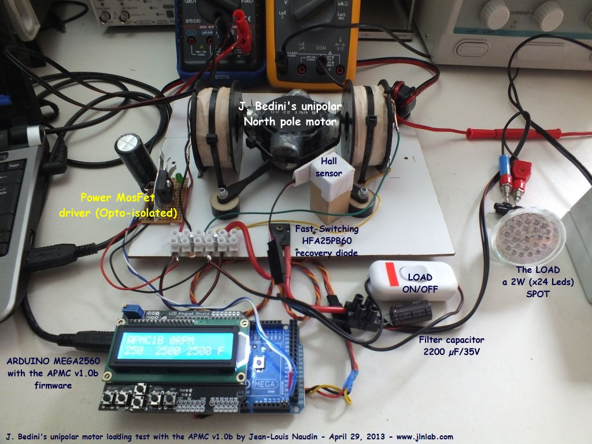
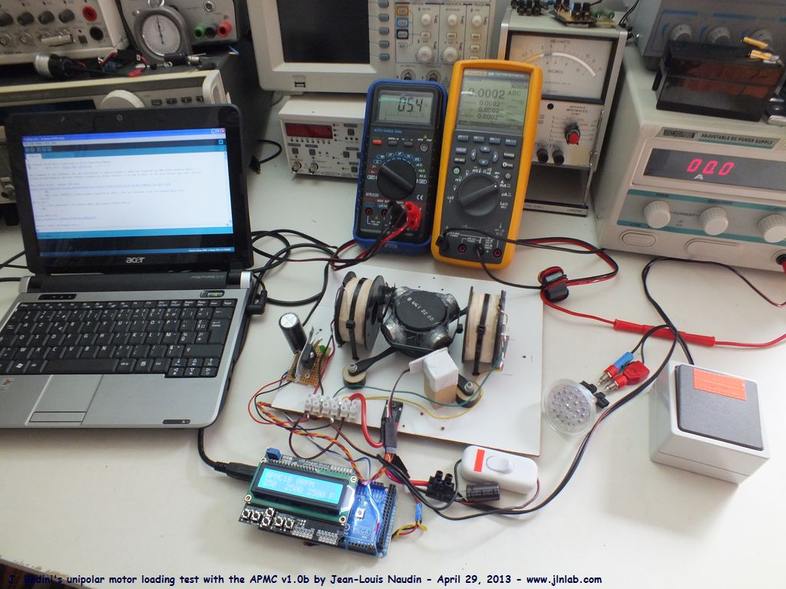
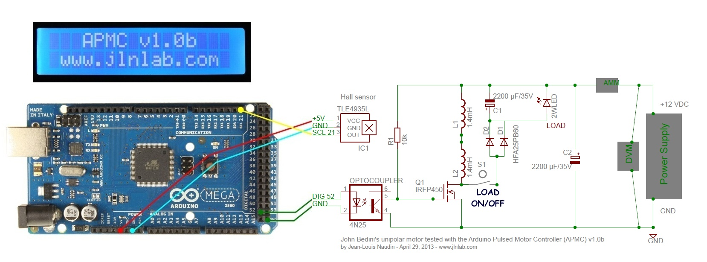
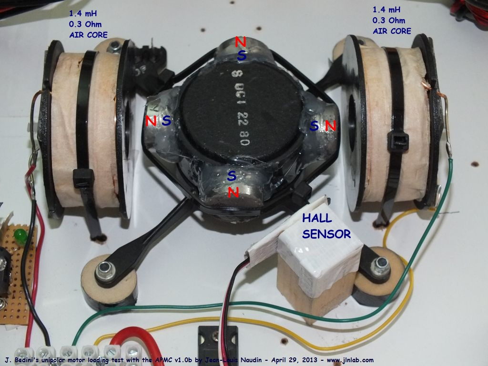
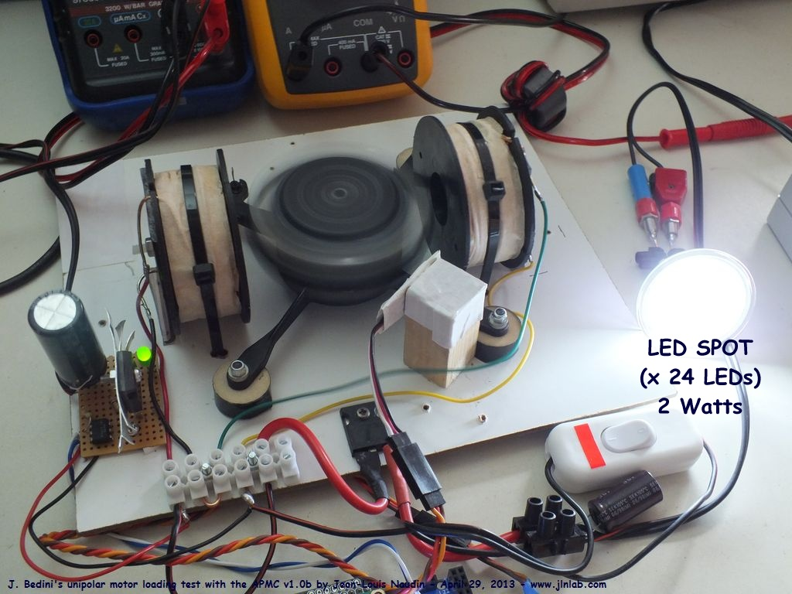
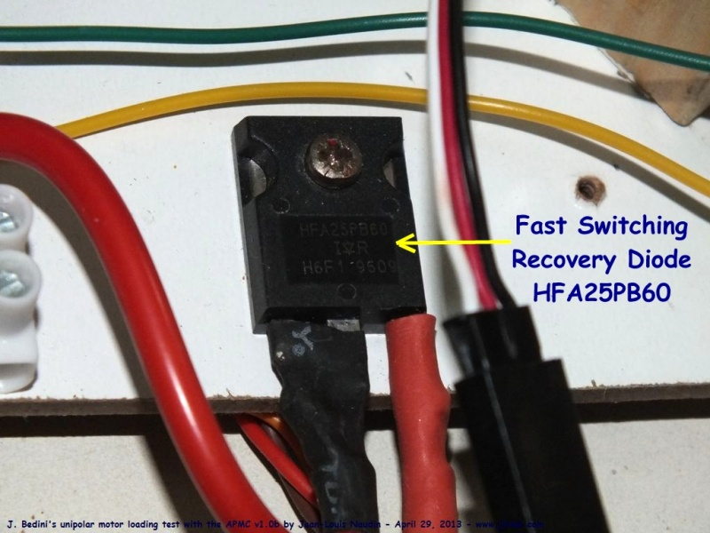
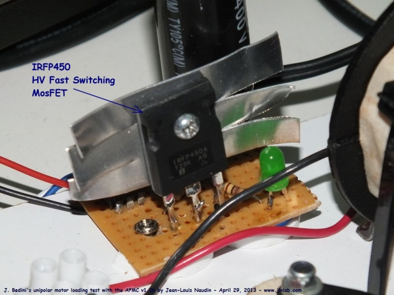
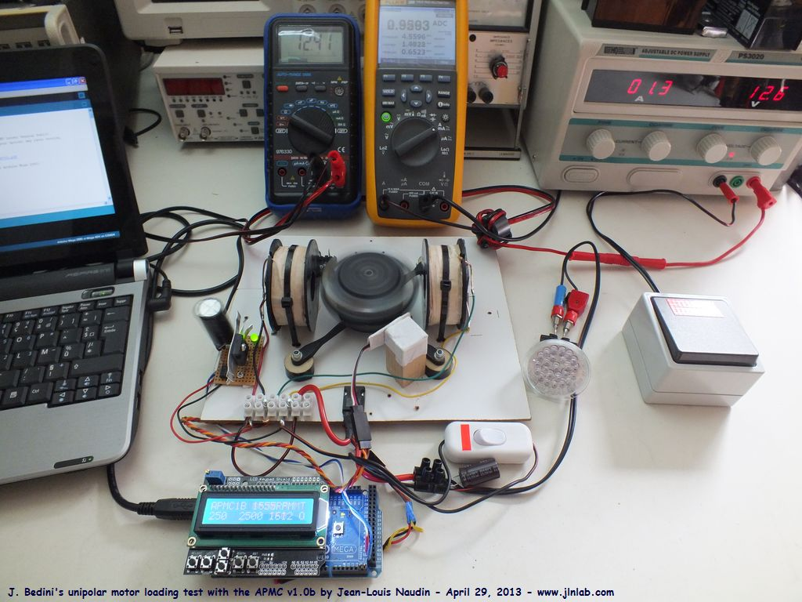
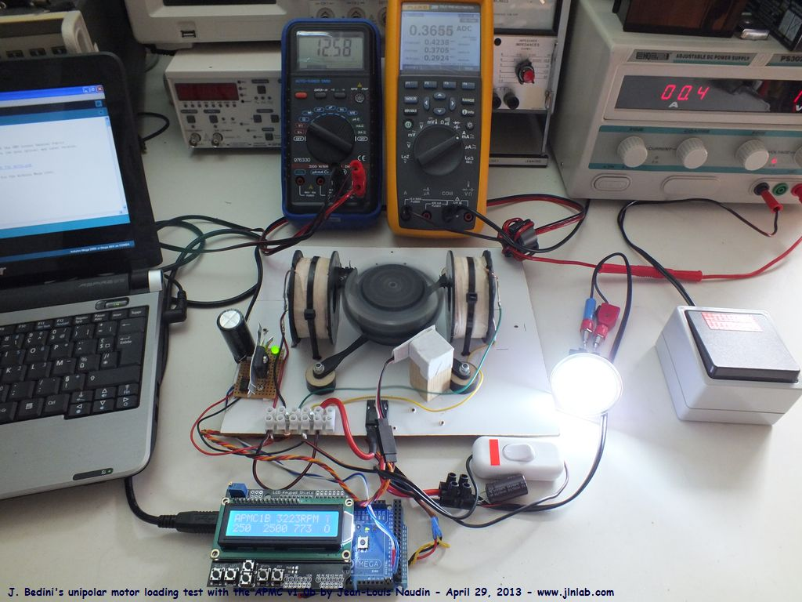
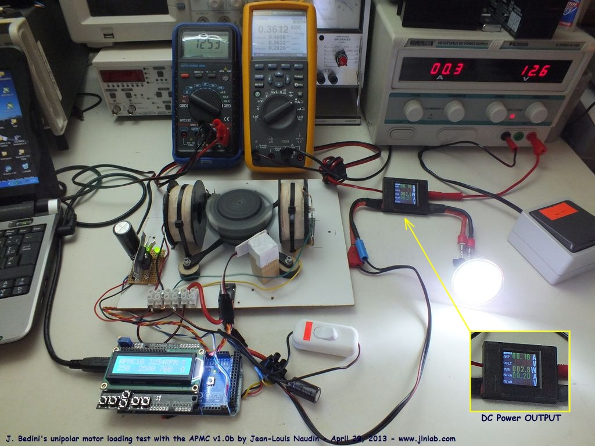

DLE-TEST25 : Tests en
charge du moteur unipolaire de J. Bedini avec l'APMC v1.0b créé le 9 Février 2013 - JLN
Labs - Mis à jour le 29 Avril 2013 All informations and
diagrams are published freely (freeware) and are intended for a private use and a non commercial
use.
Toutes les informations et
schémas sont publiés gratuitement ( freeware ) et sont
destinés à un usage personnel et non commercial Click here for the ENGLISH VERSION
29 avril 2013
- DLE-TEST25
: Voici le
test d'un moteur de type unipolaire (pôle Nord, uniquement)
inventé par John Bedini piloté par l'APMC (Arduino
Pulsed Motor Controller)
v1.0b. Un spot LED de 24 led (1.6W/12V) est alimenté uniquement
par les impulsions "Back EMF" de la bobine motrice. Un
PC est connecté via le port USB sur la carte Arduino Mega 2560,
les données télémétriques (base de temps, vitesse de
rotation, retard et durée de l'impulsion, paramètres
utilisateur et paramètres calculés) sont visualisées sur le PC
et sur l'écran LCD de l'APMC. Lorsque le spot LED de charge (2W)
est connecté sur la bobine motrice, une forte diminution de la
puissance d'entrée est observée et la vitesse de rotation du
moteur est doublée alors que le moteur produit aussi un couple
mécanique en sortie.
Voici
la configuration du test


Voici
le schéma détaillé de l'APMC et de sa carte de commande :

Voici
une photo détaillée du moteur unipolaire de John Bedini


Une
double diode rapide HFA25PB60 et un condensateur de filtrage
permet de redresser et filtrer la tension de sortie.

Le
transistor MosFet rapide (Haute Tension) IRFP450 pilotant le moteur est
couplé à l'Arduino Mega2560 via un opto-coupleur 4n25.

Lorsque
la charge est connectée en sortie la vitesse de rotation DOUBLE
and la puissance d'entrée chute considérablement.
Ci-dessous,
le moteur fonctionnant à vide (sans charge) :

Ci-dessous,
le moteur fonctionnant avec une charge de 2W en sortie :

La
PUISSANCE DC EN SORTIE sur le Spot LED utilisé comme charge a
été mesurée et vérifiée avec un Wattmètre (ci-dessous, elle
est de 2.3 Watts) :

Voici
les mesures de la tension DC et du courant DC d'ENTREE sans et
avec la charge connectée en sortie :